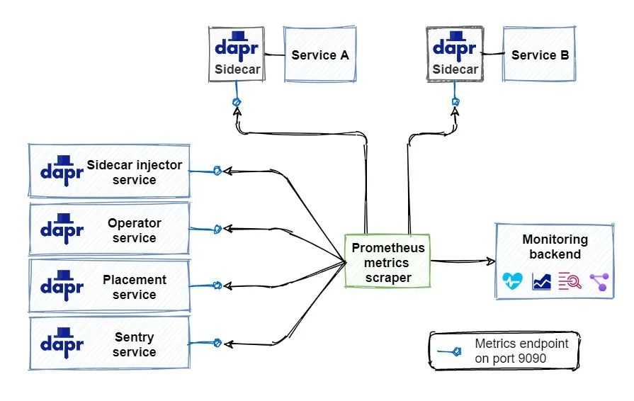
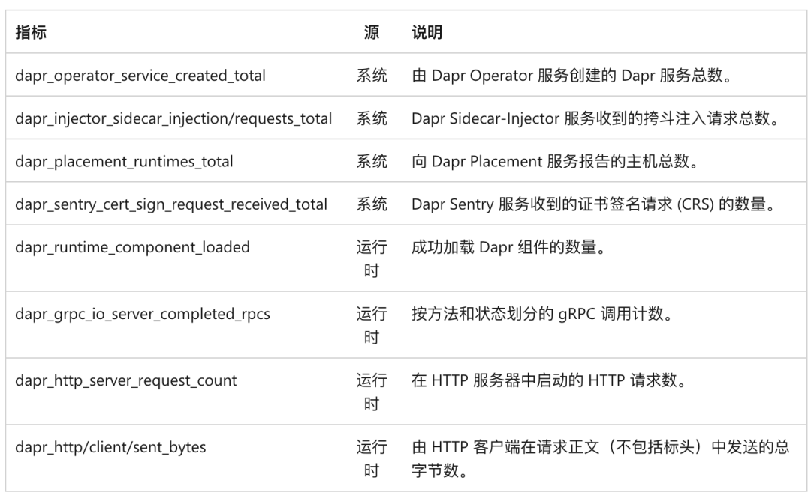
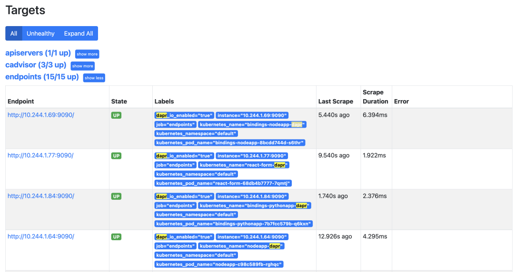
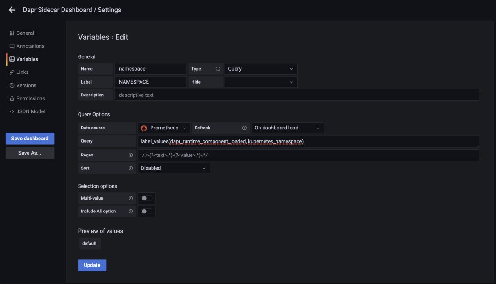
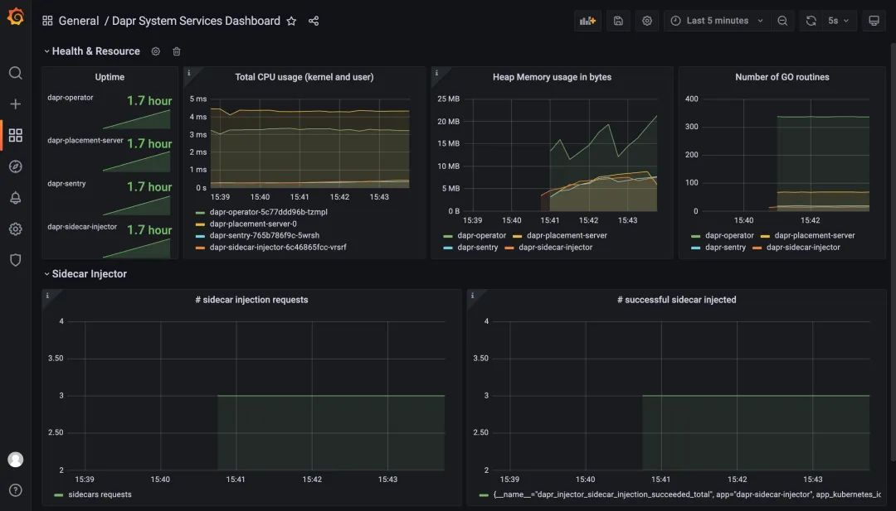
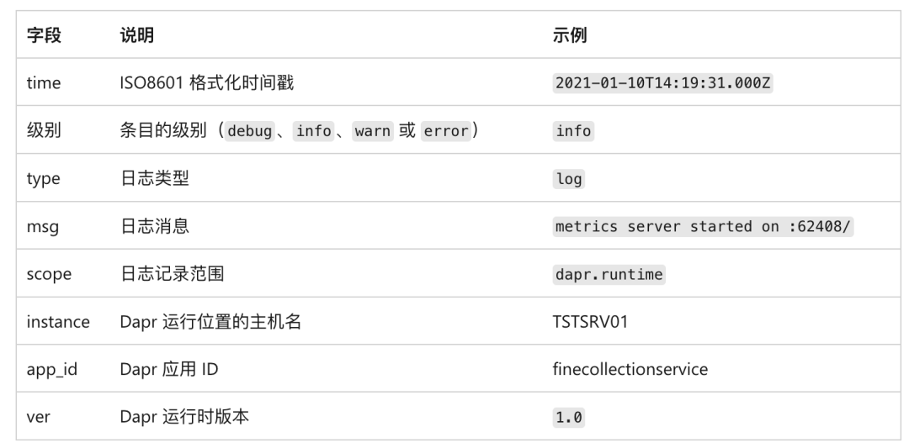

5 Dapr 可观测性之指标与日志
指标
指标可让你深入了解应用性能和资源消耗情况，在后台，Dapr 发出各种系统和运行时指标的集合。
Dapr 使用 Prometheus 作为指标标准，Dapr 和系统服务在端口 9090 上暴露指标数据。
Prometheus scraper 以预定义的时间间隔调用该接口收集指标数据，scraper 将指标值发送到监控后端，如下所示：

你可能想知道指标抓取器如何知道在何处收集指标，Prometheus 可与内置在目标部署环境中的发现机制集成。
例如在 Kubernetes 中运行时，Prometheus 可与 Kubernetes API 集成，以查找环境中运行的所有可用 Kubernetes 资源。
Dapr 为 Dapr 系统服务及其运行时生成了大量指标，如下表格所示：

在运行时，可以通过在 Dapr 命令中包含 --enable-metrics=false 的参数来禁用指标收集，也可使用 --metrics-port 9090 参数更改指标端点的默认端口。
你还可以通过为应用程序部署设置 dapr.io/enable-metrics: "false" 注解来禁用特定应用程序的指标导出器，禁用指标导出器后，daprd 将不会打开指标监听端口。
以下示例显示使用指定为 9090 的端口显式启用指标。
apiVersion: apps/v1
kind: Deployment
metadata:
name: nodeapp
spec:
selector:
matchLabels:
app: node
template:
metadata:
labels:
app: node
annotations:
dapr.io/enabled: "true"
dapr.io/app-id: "nodeapp"
dapr.io/app-port: "3000"
dapr.io/enable-metrics: "true"
dapr.io/metrics-port: "9090"
spec:
containers:
- name: node
image: dapriosamples/hello-k8s-node:latest
ports:
- containerPort: 3000
imagePullPolicy: Always
你也可以使用 Dapr 配置文件的方式启用或禁用运行时指标收集：
apiVersion: dapr.io/v1alpha1
kind: Configuration
metadata:
name: dapr-config
spec:
tracing:
samplingRate: "1"
metric:
enabled: false # 禁用指标
Prometheus 抓取器收集指标并将其发布到监视后端后，此时我们就可以使用 Grafana 来创建仪表盘，包括监控 Dapr 系统服务和 sidecar，我们可以直接导入 Dapr 提供的仪表盘模板来监控 Dapr，地址 https://github.com/dapr/dapr/tree/master/grafana，其中包含 3 个仪表盘。
- Dapr 系统服务状态 -
dapr-operator、dapr-sidecar-injector、dapr-sentry和dapr-placement - Dapr 边车仪表板 - 显示 Dapr sidecar 状态，包括 sidecar 运行状况/资源、HTTP 和 gRPC 的吞吐量/延迟、Actor、mTLS 等。
- Dapr Actor 仪表板 - 显示 Dapr sidecar 状态，包括 actor 调用吞吐量/延迟、计时器/提醒触发器和基于轮次的并发。
所以首先需要安装 Prometheus 和 Grafana，并且要配置 Prometheus 基于 Kubernetes 的自动发现（基于 Endpoints 和 Pods 都需要配置），将 Prometheus 配置为 Grafana 的数据源，我们这里已经部署了这两个应用
$ kubectl get svc -n kube-mon
NAME TYPE CLUSTER-IP EXTERNAL-IP PORT(S) AGE
grafana NodePort 10.99.209.245 <none> 3000:30403/TCP 39d
prometheus NodePort 10.100.236.253 <none> 9090:31561/TCP 81d
$ kubectl get pods -n kube-mon
NAME READY STATUS RESTARTS AGE
grafana-d877667d6-4vgnd 1/1 Running 25 (60m ago) 39d
node-exporter-49l4f 1/1 Running 48 (60m ago) 81d
node-exporter-khqls 1/1 Running 46 (60m ago) 81d
node-exporter-wjwtb 1/1 Running 47 (60m ago) 81d
prometheus-649968556c-szb9c 1/1 Running 11 (60m ago) 14d
由于 Prometheus 配置了自动发现，所以正常默认情况下会自动抓取到 Dapr 应用的指标，可以在 Prometheus 的 Targets 列表中查找：

然后我们可以在 Grafana 中分别导入 https://github.com/dapr/dapr/tree/master/grafana 提供的 3 个 Dashboard。
不过直接导入后的 Dashboard 可能不会直接显示，需要做一些修改，将数据源修改为实际配置的数据源

按照自己的系统配置后正常就可以看到仪表盘数据了。以下是显示 Dapr 系统服务指标的仪表板示例：

日志
日志可让你深入了解服务在运行时发生的情况，运行应用程序时，Dapr 将自动从 Dapr sidecar 和 Dapr 系统服务发出日志数据，但是，在应用程序代码中检测到的日志不会自动包含在内。若要从应用程序代码发出日志记录，可以导入特定的 SDK，例如 OpenTelemetry SDK。
Dapr 会发出结构化日志，每个日志条目采用以下格式

在排查问题的时候，其中的 time 和 level 字段非常有用，time 字段将对日志条目进行排序，这样就可以准确查找特定的时间段。在进行故障排除时，debug 级别的日志条目会提供有关代码行为的详细信息。
此外默认情况下，Dapr 以纯文本格式发出结构化日志数据。每个日志条目都被格式化为包含键/值对的字符串，下面是纯文本格式的日志记录示例：
time="2020-03-11T17:08:48.303776-07:00" level=info msg="starting Dapr Runtime -- version 0.5.0-rc.3 -- commit v0.3.0-rc.0-155-g5dfcf2e" instance=dapr-pod-xxxx scope=dapr.runtime type=log ver=0.5.0-rc.3
time="2020-03-11T17:08:48.303913-07:00" level=info msg="log level set to: info" instance=dapr-pod-xxxx scope=dapr.runtime type=log ver=0.5.0-rc.3
虽然这种格式很简单，但很难解析，如果我们使用日志收集工具的话，使用 JSON 格式的日志则更容易解析。使用 JSON 条目时，日志工具可以索引和查询各个字段。下面是 JSON 格式的相同日志条目：
{"instance":"dapr-pod-xxxx","level":"info","msg":"starting Dapr Runtime -- version 0.5.0-rc.3 -- commit v0.3.0-rc.0-155-g5dfcf2e","scope":"dapr.runtime","time":"2020-03-11T17:09:45.788005Z","type":"log","ver":"0.5.0-rc.3"}
{"instance":"dapr-pod-xxxx","level":"info","msg":"log level set to: info","scope":"dapr.runtime","time":"2020-03-11T17:09:45.788075Z","type":"log","ver":"0.5.0-rc.3"}
若要启用 JSON 格式，需要配置每个 Dapr sidecar，在自托管模式下，可以在命令行上指定标志 --log-as-json：
dapr run --app-id nodeapp --log-level info --log-as-json node app.js
在 Kubernetes 中，可以为应用程序的每个部署添加一个 dapr.io/log-as-json 注解，如下所示：
annotations:
dapr.io/enabled: "true"
dapr.io/app-id: "calculator-front-end"
dapr.io/app-port: "80"
dapr.io/config: "dapr-config"
dapr.io/log-as-json: "true"
当使用 Helm 在 Kubernetes 群集中安装 Dapr 时，可以为所有 Dapr 系统服务启用 JSON 格式的日志记录：
helm repo add dapr https://dapr.github.io/helm-charts/
helm repo update
kubectl create namespace dapr-system
helm install dapr dapr/dapr --namespace dapr-system --set global.logAsJson=true
由 Dapr 发出的日志可以输入到监控后端，以供分析。日志收集器是一个组件，用于从系统收集日志并将其发送到监控后端，常用的日志收集器是 Fluentd，前面课程中我们已经介绍过如何在 Kubernetes 中设置 Fluentd、Elastic search 和 Kibana 来收集日志，也可以直接参考官方文档 https://docs.dapr.io/operations/monitoring/logging/fluentd/ 再次进行了解。
运行状况
服务的运行状态提供对其可用性的见解，每个 Dapr sidecar 都会暴露一个运行状况的 API，宿主环境可以使用该 API 来确定 sidecar 的运行状况。
GET http://localhost:3501/v1.0/healthz
该操作返回两个 HTTP 状态代码：
- 204：sidecar 运行正常时
- 500：sidecar 运行状况不正常
在自拓管模式下运行时，不会自动调用运行状况 API，不过，可以通过应用程序代码或运行状态监视工具调用 API。
在 Kubernetes 中运行时，Dapr sidecar-injector 会自动将 Kubernetes 配置为使用运行状况 API 来执行存活性探针和就绪探针
Kubernetes 使用存活性探针来确定容器是否已启动并正在运行，如果存活性探针返回失败代码，Kubernetes 将假定容器状态为“死亡”并自动重启该容器，此功能可提高应用程序的整体可用性。
Kubernetes 使用就绪探针来确定容器是否已准备好开始接受流量，当某个 Pod 的所有容器都准备就绪时，就视为它已经准备就绪了，就绪情况决定 Kubernetes 服务是否可以在负载均衡场景中将流量路由到 Pod，未就绪的 Pod 将自动从负载均衡器中删除。
存活性探针和就绪探针具有多个可配置参数，两者都是在 Pod 清单文件的容器规范部分配置的。对于每个 sidecar 容器，Dapr 默认使用以下配置：
livenessProbe:
httpGet:
path: v1.0/healthz
port: 3501
initialDelaySeconds: 5
periodSeconds: 10
timeoutSeconds: 5
failureThreshold: 3
readinessProbe:
httpGet:
path: v1.0/healthz
port: 3501
initialDelaySeconds: 5
periodSeconds: 10
timeoutSeconds: 5
failureThreshold: 3
以下参数可用于探针：
- path 指定 Dapr 运行状况 API 端点
- port 指定 Dapr 运行状况 API 端口
- initialDelaySeconds 指定 Kubernetes 在首次开始探针容器之前需等待的秒数
- periodSeconds 指定 Kubernetes 在两次探针之间等待的秒数
- timeoutSeconds 指定 Kubernetes 在超时前等待 API 响应所需的秒数。超时将被解释为失败
- failureThreshold 指定在考虑容器处于不活动状态或未就绪之前，Kubernetes 将接受的失败状态代码的数量
对于在生产环境中运行分布式系统，详细的可观测性至关重要。Dapr 提供不同类型的遥测，包括分布式追踪、日志、指标和运行状况。
需要注意的是 Dapr 仅生成 Dapr 系统服务和 sidecar 的遥测数据，应用程序代码中的遥测不会自动包括在内。不过我们可以使用特定的 SDK 从应用程序代码中发出遥测数据。
Dapr 遥测是以基于开放标准的格式生成的，因此可以由大量可用的监视工具引入。包括 Zipkin、Azure Application Insights、ELK Stack、New Relic 和 Grafana 等。此外 Dapr 还可以配置为发出结构化日志记录，建议使用 JSON 格式的结构化日志数据，因为后端监控工具可以对其进行索引，用户通过索引日志可在搜索日志记录时执行丰富的查询。同时 Dapr 也提供显示 Dapr 服务和配置相关信息的仪表板。